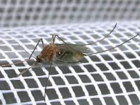
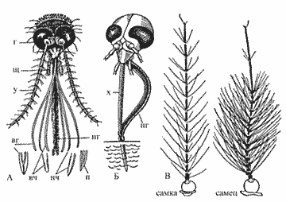
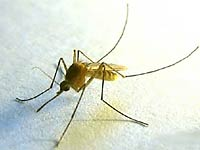

Увеличенный комар

2 задние ноги - "усы"
В прозрачном брюшке комара видна наша кровь и некоторые органы комара. Энтомолог может их распознать. Брюшко не полностью заполнено кровью, как кажется издалека. На фотографии показаны волоски на усиках комара. Эти волоски используются для обнаружения запахов и движения воздуха.
Комар, сидящий на сеточке, сфотографировн камерой Nikon co880 с расстояния 4см. Чтобы не улетел, нужно двигаться очень медленно. Больше никаких сложностей.

Из книги Е.Виноградовой: Самцы комаров не питаются кровью. Они сосут нектар растений, поэтому в их хоботке колющие части отсутствуют. У самцов усики покрыты более длинными, пушистыми волосками, чем у самок, что заметно невооружённым глазом. Прежде чем убить комара, разберитесь, с кем вы имеете дело: "усатые" самцы совершенно безобидны и не заслуживают такой участи.

Ветеран цифры 2000г
Комар " ветеран цифры ", сфотографирован камерой HP-C200 в 2000 году. Это была одна из первых цифровых мыльниц. Фокусировалась 5 секунд. Во время фокусировки на экранчике ничего не было видно. Изображение на заднем экране камеры было неподвижно, не то, что у современных камер. Чтобы сфотографировать комара пришлось его немного замучать. Он сидел под стаканом полчаса, пока не перестал летать, а стал просто ходить по столу. Тогда была включена лампа, стакан был убран, комар сфотографирован, и отпущен на свободу. Усы у него не очень пушистые - значит это была самка.

{kind=link}
При фотографировании комаров и мух камерой HP-C200 я использовал увеличительное стекло 4x. Простую лупу перед объективом можно использовать с любой современной камерой для приближения и получения художественного эффекта радиального искажения или размытости краёв кадра. Хорошо размытые края кадра получились на фото цветка клевера .